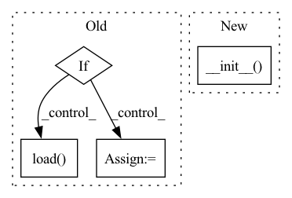

Pattern ID :36452
Before Change
section: Text = None,
env_prefix: Text = "ZENML_",
):
if not env_prefix:
raise Exception("env_prefix can not be null.")
self.env_prefix = env_prefix
self.config_path = self.env_prefix + "_PATH"
self.config_prefix = self.env_prefix + "_PREFIX"
self.config_root_path = self.env_prefix + "_ROOT"
self.config = {} // Main dict to hold all values
self.prefix = None // prefix
self.basepath = os.getenv(
self.config_path, default=self.default_config_root
)
self.config_root = os.getenv(
self.config_root_path, default=self.default_config_root
)
self.section = section
self.config_file = self._get_filepath(
filename=config_file, config_dir=config_dir
)
self.load()
def load(self):
(Re)Load the config file.
try:After Change
def __init__(self, **data: Any):
We persist the attributes in the config file.
super().__init__(**data)
self._dump()
def __setattr__(self, name, value):
We hook into this to persist state as attributes are changedIn pattern: SUPERPATTERN
Frequency: 3
Non-data size: 4
Instances Fragment ID: 103030628
Project Name: maiot-io/zenml
Commit Name: 242effc6d759ea0530aed8d814b189439ee927c1
Time: 2021-09-17
Author: htahir111@gmail.com
File Name: zenml/config/base_config.py
M Class Name: BaseConfig
N Class Name: BaseConfig
M Method Name: __init__(1)
N Method Name: __init__(5)
M Parent Class: BaseSettings
N Parent Class:
M File Name: zenml/config/base_config.py
N File Name: zenml/config/base_config.py
M Start Line: 55
M End Line: 79
N Start Line: 35
N End Line: 38
Before Change
super().__init__() // loading self.naimai_dois & other attributes
self.data = pd.read_csv(papers_path)
print("Len data : ", len(self.data))
if nlp:
self.nlp = nlp
else:
print("Loading nlp vocab..")
self.nlp = spacy.load( nlp_vocab)
self.nlp.add_pipe(LanguageDetector(), name="language_detector", last=True)
def add_paper(self,idx_in_data):
new_paper = paper_biorxiv(df=self.data,After Change
class papers_biorxiv(papers):
def __init__(self,papers_path,database,nlp=None):
super().__init__( papers_path,database,nlp) // loading self.naimai_dois & other attributes
def add_paper(self,idx_in_data):
new_paper = paper_biorxiv(df=self.data, Fragment ID: 103030625
Project Name: yassinekdi/naimai
Commit Name: c7878d067c8f9f6304c51dcbd96acfa883e85c4a
Time: 2022-11-06
Author: keptsa@yahoo.fr
File Name: papers/only_abstracts/biorxiv.py
M Class Name: papers_biorxiv
N Class Name: papers_biorxiv
M Method Name: __init__(4)
N Method Name: __init__(3)
M Parent Class: papers
N Parent Class: papers
M File Name: papers/only_abstracts/biorxiv.py
N File Name: papers/only_abstracts/biorxiv.py
M Start Line: 61
M End Line: 71
N Start Line: 15
N End Line: 16
Before Change
super().__init__() // loading self.naimai_dois & other attributes
self.data = pd.read_csv(papers_path)
print("Len data : ", len(self.data))
if nlp:
self.nlp = nlp
else:
print("Loading nlp vocab..")
self.nlp = spacy.load( nlp_vocab)
Language.factory("language_detector", func=create_lang_detector)
self.nlp.add_pipe("language_detector", last=True)
def add_paper(self,idx_in_data):After Change
class papers_hal(papers):
def __init__(self, papers_path,database,nlp=None):
super().__init__( papers_path,database,nlp) // loading self.naimai_dois & other attributes
def add_paper(self,idx_in_data):
new_paper = paper_hal(df=self.data, Fragment ID: 103030636
Project Name: yassinekdi/naimai
Commit Name: c7878d067c8f9f6304c51dcbd96acfa883e85c4a
Time: 2022-11-06
Author: keptsa@yahoo.fr
File Name: papers/only_abstracts/hal.py
M Class Name: papers_hal
N Class Name: papers_hal
M Method Name: __init__(4)
N Method Name: __init__(3)
M Parent Class: papers
N Parent Class: papers
M File Name: papers/only_abstracts/hal.py
N File Name: papers/only_abstracts/hal.py
M Start Line: 75
M End Line: 86
N Start Line: 16
N End Line: 17